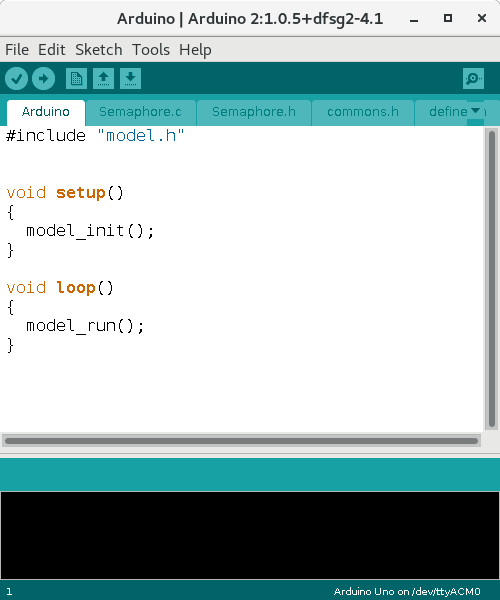
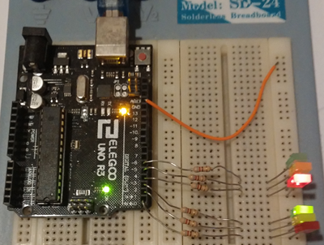

Running the Code
By generating the Code, we have created four new files in the include
and src folders, if we have set up the Arduino IDE
with related links, all the code has been generated together in the
Arduino folder.
Looking at this folder we should see :
- Semaphore.h
- Semaphore.c
- model.c
- tokens.h
As we said, every module produces a couple of separated files, that
in this case are Semaphore.c and Semaphore.h . In
addition to the specific operations and attributes, defined for the
module, this code contains a couple of functions named Semaphore_Init()
and Semaphore_Run().
These two functions, are collected by two functions stored in model.c
and called model_run() and model_init() . The model_init
function, collects all the constructors or initialization functions,
for the modules which have a FSM or at least the init
flag on and the functions are sorted using the DSF algorithm
on the dependencies. The model_run collects all the calls
to the Run functions of the modules and must be inserted in
the typical infinite loop we can find in almost every firmware.
Finally there is the tokens.h file that is the include
declaration for all the tokens that are always visible to the entire
project, without declaring dependencies.
This four files are not enough to compile the entire
project, we need some file more which can depends from the
architecture.
Model / Architecture connections
Each module header file, includes commons.h .
We need to create this file, reasoning on the required libraries and
the architecture required to run our project.
A good commons.h for this project based on Arduino 1
architecture should be :
#ifndef __SUNRIZE_COMMONS__
#define __SUNRIZE_COMMONS__
#include "Arduino.h"
#define time_ref millis
#include "defines.h"
#endif /*__SUNRIZE_COMMONS__*/
Essentially we include the Arduino.h file but we also
include 2 lines of code one #define and one #include
of the defines.h file.
time_ref must be the name of the function returning the
system time in milliseconds as unsigned long
format. Fortunately this function is already present in the Arduino
system and it is called millis .
It is not relevant when the timer started, if referred to the EPOCH
or the switch on of the micro, the only relevant thing is that must
be and unsigned long, based on milliseconds and obviously monotonic.
We will use the two complements arithmetic to prevent the counter
overflow, so that, with the typical unsigned long at 32 bit we have
2^31 milliseconds that are around 24 days and 20 hours, that is the
maximum waiting time on a timer.
Other architectures, does not have a unified solution, and this
function can be not-existent into the libraries, because requires to
set a timer and the timer, can depend by the oscillator frequency
and can be unaligned with the milliseconds. All these problem could
be resolved in external pieces of code that can be included into the
project.
Defines
The Defines is usually an architecture independent files.
In order to offer the best flexibility many part of the produced
code are resolved with defines that are included in this files.
This is usually what you need to include :
#ifndef __SUNRIZE_DEFINES__
#define __SUNRIZE_DEFINES__
#define TIMER_DEFINITION(timer) unsigned long timer;
#define TIMER_RESET(timer) timer=time_ref();
#define TIMER_INCREASE(timer,delay) timer+= (long) (delay);
#define TIMER_TIMEOUT(timer,delay) if((long)time_ref()-(long)timer>=(long)(delay))
#define TOKEN_REFERENCE(token) extern volatile unsigned token;
#include "tokens.h"
#define TOKEN_DEFINITION(token) volatile unsigned token = 0 ;
#define TOKEN_SIGNAL_DEFINITION(token) static volatile unsigned token;
#define TOKEN_CHECK(token) if (token>0)
#define TOKEN_RAISE(token) token++;
#define TOKEN_USE_LIMIT(token,limit) token=((token<(limit)) ? token : (limit) )-1;
#define TOKEN_USE(token) --token;
#define TokenRaise(x) TOKEN_RAISE(Token_##x)
#define TRACE_STATE(x,y)
#define TRACE_FUNCTION(x,y)
#endif /*__SUNRIZE_DEFINES_*/
Everything is used by the system, except for the TokenRaise(name)
define that can be used to raise a token for a transition .
Note that this files includes tokens.h , and it is included
by commons.h that is included by each module, so the tokens
have a global visibility.
The main file
Finally we need to define the Main File .
As we know a typical firmware is composed by the
hardware/software initialization phase and an infinite loop where
things are done.
In model.c we already have everything the model requires to
run properly, that are the two functions :
void model_init();
void model_run();
Obviously, if you need for example to initialize something else
(liker the timer interrupt for the time base), you will need to
initialize the related code too.
Optionally you can define this functions, directly into you code or
create an include file like this.
model.h
#ifndef MODEL_H
#define MODEL_H
extern "C" {
void model_init();
void model_run();
}
#endif /*MODEL_H*/
Then, with a "normal" compiler and IDE you need a main
entry point which you can define in a main.c file :
main.c / main.cpp
#include "model.h"
int main()
{
model_init();
while(1)
{
model_run();
}
return 0;
}
The Arduino architecture instead hides the main inside the
library code and the implementation is a little different :
Arduino.ino
#include "model.h"
void setup()
{
model_init();
}
void loop()
{
model_run();
}
Then opening the Arduino IDE, all the files included
in the directory will be loaded automatically :

At this point, you should know what to do with the IDE :
update the project to the hardware and the semaphore
works !

Code Preservation
In this example, all the code is described
in the Editing Dialog Boxes and stored into the model.
As we said, in SunRiZe, some part of the code can be
stored outside the model, directly into the generated code, and
this is especially true for projects which can have a remarkable
consistency.
In SunRiZe there are areas into the produced code that are
delimited, by special keys named Code Preservation Keys.
When a file need to be rewritten/regenerated, due to the model
changes, all the code contained between the Code Preservation
Keys is temporarily stored in memory and reported when a key
with the same tag is inserted into the code by the model.
For example, we can consider the Semaphore constructor :
void Semaphore_Init()
{
TRACE_FUNCTION(Semaphore,Semaphore_Init)
/*@@+Init_definitions*/
/*@@-Init_definitions*/
...
/*@@+Init_code*/
/*@@-Init_code*/
}
These tags :
/*@@+<tag>*/
/*@@-<tag>*/
Are Code Preservation Keys , the + is the beginning and
the - is the end of a Code Preservation Block.
Note : These keys must be single rows. Sadly the early C
standards do not allow the inline comments ( // ) . You must
consider these keys as code separators and do not modify them in any
way.
Everything written in this blocks has to be considered "Safe" and
when the code is rewritten, it is replaced in place of the related empty
block.
If a function is missed or something is changed and the related tag does
not exists anymore, the dead code is placed at the end of the file,
between the :
#if 0
#endif
rows, with the related Code Preservation Keys . That code has
always considered dead by the compiler but the generator will continue
to store the related Keys in memory, so that if the tag is
reintroduced, the code will be placed again into the active code.